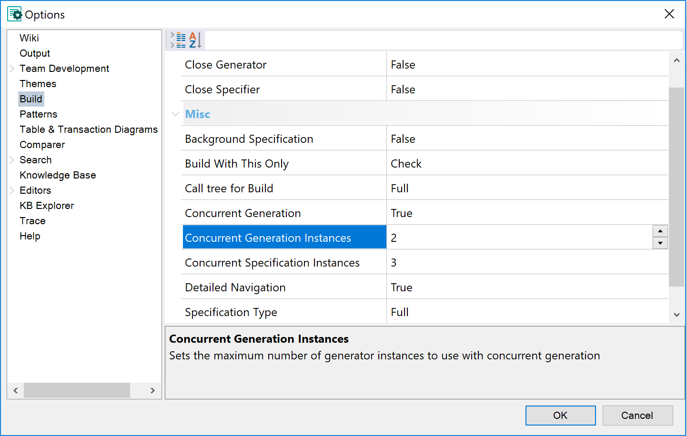

This feature speeds up the building process as it enables to take the most out of the power of the multiple cores and multitasking capabilities of the computer.
In big Knowledge bases, this may reduce the total time of a "Rebuild All" to the half or more.
To enable this feature set the Concurrent Specifier instances property and/or the Concurrent Generator instances to a value higher than 1, from the Tools -> Options -> Build menu:

In the tests the GeneXus Team did, these values performed best:s
- Concurrent Specifier Instances: int(#CPUs / 2 + 1)
- Concurrent Generator Instances: max(1, int(#CPUs/2))
e.g.
- 4 cores: 3 Concurrent Specifier Instances & 2 Concurrent Generator Instances
- 8 cores: 5 Concurrent Specifier Instances & 4 Concurrent Generator Instances
Note:
- If no value is specified, a default value is set, based on the previously explained algorithm. To use default values again remove "ConcurrentGenerationInstances" and/or "ConcurrentSpecificationInstances" from Environment.config file.
- Maximum values depend on logical or virtual processors (Since GeneXus 15 Upgrade 7, it is 2 times the number of logical or virtual processors)
- Best performance may vary depending on the KB. In one of the KBs that has been tested, the best option in a machine with 4 CPUs, was to set 1 specifier and 4 generators. By defining those values, rebuild all times went down, from 9hs to 6hs (In that KB, using just 1 CPU for spec and 1 CPU for generation, took 20hs on that machine). So if the generation process takes much more time than the specification process, you may need to change the default values and increase the generators and decrease the specifiers.
After setting new values, you need to restart GeneXus.
Tip: once the values were changed the default values can be restored by removing "ConcurrentGenerationInstances" and "ConcurrentSpecificationInstances" tags from Environment.config file (e.g. C:\Users\MyUser\AppData\Roaming\GeneXus\GeneXus\15\Environment.config)
|